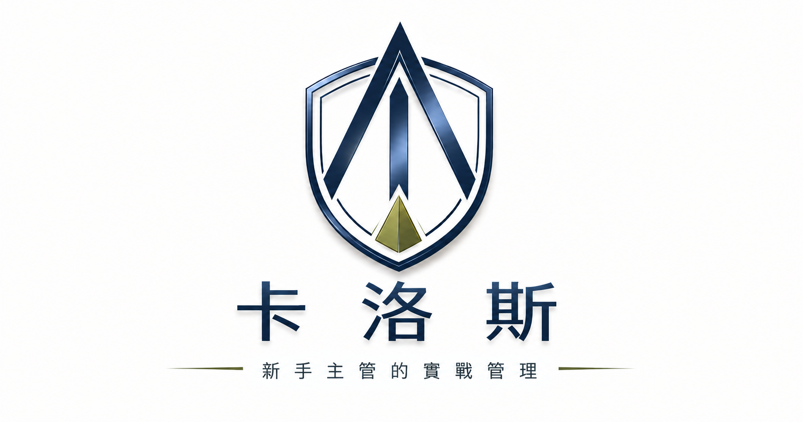

01
站穩角色
卡洛斯｜新手主管實戰管理顧問
給剛升主管，或準備成為主管的你。
從角色轉換、團隊帶領，到向上管理與組織協作，
用第一線管理觀察與實戰方法，陪你建立自己的管理判斷。

New Manager Growth Framework
管理不是一次學會，而是在角色、團隊與組織之間逐步成長。
來自第一線管理現場。
把複雜情境拆成可理解的問題。
讓管理方法回到工作現場。
Programs & Speaking
從新任主管培訓、團隊帶領，到企業管理主題講座，把管理方法真正帶回工作現場。
Management Insights
完整內容統一收錄於實戰管理解析頁，依照三個主管成長階段，找到你現在需要的文章與方法。
前往實戰管理解析 →把第一線管理現場，
慢慢說清楚。
About Carlos
累積近 15 年職場實務經驗，持續從第一線工作與管理現場，整理主管真正會遇到的問題。
曾任上市公司子公司管理職，帶領數十人團隊並負責大型通路營運。以「卡洛斯｜新手主管實戰管理顧問」品牌主理人及新手主管實戰管理教練的角色，專注於管理現場真正需要的判斷與方法。
Experience & Practice
New Manager Development
陪你少走彎路，穩穩成為會帶人的主管。
給剛升主管，或準備成為主管的你。
Contact
如果你正在面對主管角色轉換、團隊管理、人才培育，或企業主管訓練需求，歡迎留下訊息，從一次對話開始。